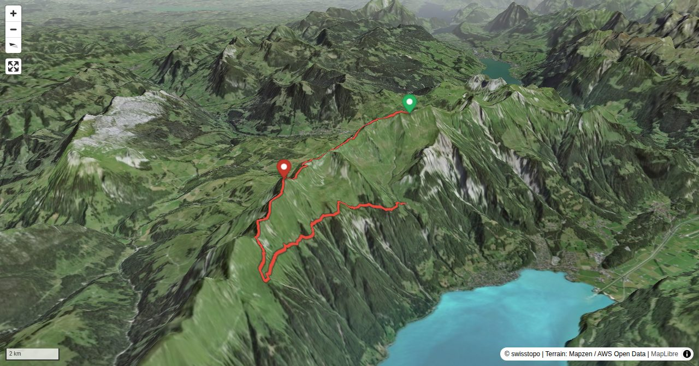

Wenn man den ganzen Brienzergrat überschreiten wollte, wäre das für Normalwandernde mit An- und Abreise ein sehr langes Tageswerk. Deshalb teilen wir die in den letzten Jahren populär gewordene Grattour in zwei Teilstücke auf. Der Gratabschnitt um das Tannhorn ist für Alpinwandernde am interessantesten, hier wartet auch die Schlüsselstelle des gesamten Brienzergrates. Der Grat bis Ällgäuwlicke bildet die Grenze zum Jagdbanngebiet Augstmatthorn / Tannhorn. Zelten und Drohnenflüge sind verboten, dafür stehen die Chancen für eine Steinbockbegegnung gut. Die Einhaltung der Regeln im Jagdbanngebiet und respektvolles Verhalten (z.B. kein offensives Annähern an die Tiere zum Fotografieren) ist auf dem Brienzergrat leider nicht für alle selbstverständlich.
Der Zeitbedarf variiert stark je nach Gangart auf den exponierten Graten. Für den Rückweg ab Allgäuwlicka zur Planalp sind 1:30 - 2 h zu kalkulieren (Gegensteigungen). Der alternative Abstieg nach Norden (Kemmeribodenbad) entlang dem markierten Bergwanderweg dauert rund eine halbe Stunde länger, der Abstieg nach Süden (Oberried am Brienzersee) etwa gleich lang, aber viel steiler.
Quick Facts
| Summit elevation | 2265 m |
|---|---|
| Difficulty | SAC T5- Check the route notes below for terrain and commitment level. Guide |
| Trailhead | Brienzer Rothorn, Bergstation |
| Distance | 13.2 km (out-and-back) |
| Total ascent | ~484 m |
| Elevation range | 1350-2265 m |
| Route sources | SAC Route Portal |
Photos


Route Map & Elevation
i
i
sac_scale (precise T1–T6) with
swissTLM3D Wanderwegart
fallback where OSM is silent (coarser T2/T3 and T4+ buckets).
Coverage: OSM 52.4% · swisstopo 47.5% · unknown 0.0%.Elevations computed from the inlined GPX track (SwissTopo height API).
Loading forecast…
3D Terrain View

Route Details
Brienzergrat-Überschreitung erster Teil Rothorn - Tannhorn
- Der Zeitbedarf variiert stark je nach Gangart auf den exponierten Graten. Für den Rückweg ab Allgäuwlicka zur Planalp sind 1:30 - 2 h zu kalkulieren (Gegensteigungen). Der alternative Abstieg nach Norden (Kemmeribodenbad) entlang dem markierten Bergwanderweg dauert rund eine halbe Stunde länger, der Abstieg nach Süden (Oberried am Brienzersee) etwa gleich lang, aber viel steiler. Zeitbedarf ganzer Brienzergrat vom Brienzer Rothorn zum Harder Kulm 7:30 - 9:30 h
Terrain & safety
Schlüsselstelle am gesamten Brienzergrat ist die ausgesetzte und mit einem Drahtseil entschärfte Passage beim Schärsax-Zahn kurz vor dem Tannhorn, je nach persönlichen Empfinden und den Verhältnissen ein oberes T4 / unteres T5. Bei Nässe werden die erdigen Wegspuren am Grat sehr rutschig; von einer Begehung ist dann abzuraten. Vorsicht: Bei der Tour über den ganzen Brienzergrat dürfen die physische Komponente (Distanz Brienzer Rothorn - Harder rund 20 km, zahlreiche Gegensteigungen!) und vor allem die Anforderungen an die Konzentrationsfähigkeit nicht unterschätzt werden, man bewegt sich über lange Strecken in exponiertem Gelände, das kaum Fehler verzeiht. Die Markierungen (rot-weiss / blau-weiss oder nicht markiert) haben in den letzten Jahren immer wieder mal gewechselt, die Route ist aber kaum zu verfehlen.
Source: SAC Route Portal
Getting There & Back
Start: Brienzer Rothorn, Bergstation (2251 m)
Directions from to Brienzer Rothorn, Bergstation
End: Station Planalp (1350 m)
Directions from Station Planalp back to
Cable car to Brienzer Rothorn, Bergstation.
Field Reference
| Trailhead | Brienzer Rothorn, Bergstation | 46.78750, 8.03910 |
|---|---|---|
| Summit | Brienzergrat Rothorn Tannhorn (2265 m) | 46.77499, 7.98462 |
Coordinates are WGS84 decimal degrees (lat, lon). Emergency: 112 (general) or 1414 (Rega air rescue). Page URL: